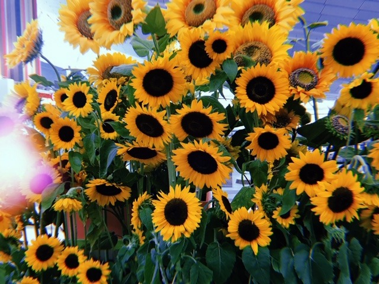
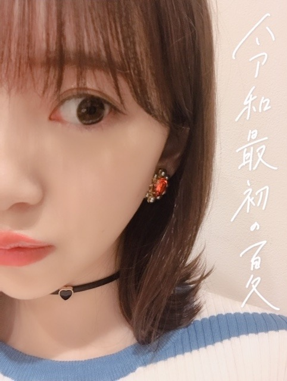
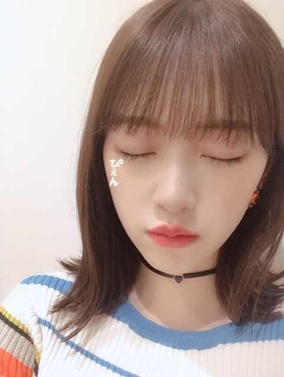

2019/0809Friあっという間
やほ〜

羽田空港に遊びに行ったときに向日葵を見つけました
未央奈っていう名前の候補とは別に、ひまわりっていう名前の候補があったらしくしかも、クレヨンしんちゃんのひまわりが産まれる前だったみたい。
10月生まれなのになんでなんだろう。
造花か生花かは分かりませんが夏を感じたなぁ☺︎
あっという間に夏が終わり、秋が来て冬が来て。
人生って本当にあっという間なんやろなーと
だからこそ大切に大切に生きなきゃね
人に求めるより与えるほうが私はずっと幸せ☺︎
こうしてほしいって求めるんじゃなくて、私ならこうされたら嬉しいなとかこんなことしたら喜んでもらえるかな助けになるかなって考えることが生きがいなんです
もちろんされて嬉しいこといわれて嬉しいこともたくさんあるけどね。


明日は何部かで、ホットギミック tシャツを着ます！
違う部には私服を着ます〜
熱中症気をつけてね
では☺︎
2019/08/09 20:18
コメント(303)
未央奈さん、こんにちは。
おっしゃるように、与えることは幸せと思います。
もちろん、与えられることも有難いですが与えるほうが自分自身でできることですね。
その姿勢を持っていればいつも幸せを感じるはずです。
自分もだれかの役にたとう。
おっしゃるように、与えることは幸せと思います。
もちろん、与えられることも有難いですが与えるほうが自分自身でできることですね。
その姿勢を持っていればいつも幸せを感じるはずです。
自分もだれかの役にたとう。
好き、大好き、愛してる
わっさー！
わっさー！
こんにちは！路面電車の街！聴きました。(^.^)
飛鳥ちゃん、未央奈さん、美月のユニットも良いね。(^.^)聞き惚れちゃいました。
愛知県も路面電車走ってる街もありますので、
親しみを感じました。CD 発売日が楽しみです
(^.^)今日は横浜個別握手会では、ありませんか？水分補給を大切にEnjoyして、下さい。(^.^)
飛鳥ちゃん、未央奈さん、美月のユニットも良いね。(^.^)聞き惚れちゃいました。
愛知県も路面電車走ってる街もありますので、
親しみを感じました。CD 発売日が楽しみです
(^.^)今日は横浜個別握手会では、ありませんか？水分補給を大切にEnjoyして、下さい。(^.^)
最後の写真､未央奈の目尻に「ぴえん」の落書きカワイイ♪
俺が自分の顔の写真に落書きするとしたら鼻に「びえん(鼻炎)」


俺が自分の顔の写真に落書きするとしたら鼻に「びえん(鼻炎)」
未央奈さん
イヤホン似合いますね
僕合宿行ったら風邪引きました
体に気をつけて頑張って下さい！
イヤホン似合いますね
僕合宿行ったら風邪引きました
体に気をつけて頑張って下さい！
こんにちは！ぜんざいです！
前もコメントしたんですけど、その時の名前覚えてないので、ぜんざいにしました！
インパクトあるかなぁって。笑
ぜんざいってきたら、私って思ってください！
未央奈ちゃんを見て、いつも元気をもらってます！
嫌なことがあったとき、絶対に未央奈ちゃんを見るようにしています。
疲れた時も、未央奈ちゃんを見ると、とても元気になれるんです。
いつも、ブログ更新楽しみにしていて、たまにですが、コメントしてます！
ひとつ質問してもいいですか？
未央奈ちゃんは学生時代どんなふうに勉強していましたか？
私は勉強が苦手なので、教えてほしいです！
長文すみません！
いつまでも未央奈ちゃんを応援しています！
ぜんざい
前もコメントしたんですけど、その時の名前覚えてないので、ぜんざいにしました！
インパクトあるかなぁって。笑
ぜんざいってきたら、私って思ってください！
未央奈ちゃんを見て、いつも元気をもらってます！
嫌なことがあったとき、絶対に未央奈ちゃんを見るようにしています。
疲れた時も、未央奈ちゃんを見ると、とても元気になれるんです。
いつも、ブログ更新楽しみにしていて、たまにですが、コメントしてます！
ひとつ質問してもいいですか？
未央奈ちゃんは学生時代どんなふうに勉強していましたか？
私は勉強が苦手なので、教えてほしいです！
長文すみません！
いつまでも未央奈ちゃんを応援しています！
ぜんざい
未央奈ちゃん握手会楽しんで来てね〜。
暑いから熱中症には気をつけてね
暑いから熱中症には気をつけてね
やほやほ～がえし
堀ちゃんの可愛らし食べるMVシーン
ばんざーい、嬉しい嬉しい
ありがとうね
がんばれー、ほりっぴ！！！
堀ちゃんの可愛らし食べるMVシーン
ばんざーい、嬉しい嬉しい
ありがとうね
がんばれー、ほりっぴ！！！
かわいいです
実際あっという間ですね。
令和が始まって既に3ヶ月経ってますし。
つい昨日まで平成だった気がするんですけどねー。
そろそろ令和発行の硬貨とか出てくるのかなぁ☆
令和が始まって既に3ヶ月経ってますし。
つい昨日まで平成だった気がするんですけどねー。
そろそろ令和発行の硬貨とか出てくるのかなぁ☆
みおなー、やっほー！
ブログ更新ありがとう！
花の名前はあんまり知らんけど
季節、その時々で
彩り華やかに咲く姿を見ると
四季があるっていいなってあらためて
あっという間だからこそ
ひとつひとつの瞬間を大切に
お互いに頑張っていきましょう！
写メたくさんありがとう
ぴえんの写メ、好き！
でわっ、また。ばいっっっ
ブログ更新ありがとう！
花の名前はあんまり知らんけど
季節、その時々で
彩り華やかに咲く姿を見ると
四季があるっていいなってあらためて
あっという間だからこそ
ひとつひとつの瞬間を大切に
お互いに頑張っていきましょう！
写メたくさんありがとう
ぴえんの写メ、好き！
でわっ、また。ばいっっっ
ひまわり
 ペロペロ
ペロペロ
未央奈ちゃんは忙しい中、ブログを楽しみにして
くれている人の為にも毎日更新してくれるのも
喜んでくれる人がいるからだよね！
くれている人の為にも毎日更新してくれるのも
喜んでくれる人がいるからだよね！
未央奈ー
外はバカ暑くて僕は出歩けません(苦笑)
僕の身体は直射日光を拒んでるようです…ははは…
外はバカ暑くて僕は出歩けません(苦笑)
僕の身体は直射日光を拒んでるようです…ははは…
向日葵のような堀未央奈ちゃん、向日葵のように、
どんどん成長してく未央奈ちゃんを、応援していきたい。
なので頑張ってほしいー。楽しいブログありがとー
これからもブログを読んでいきたいとので、
これからもブログ更新お願いします。それでは。
どんどん成長してく未央奈ちゃんを、応援していきたい。
なので頑張ってほしいー。楽しいブログありがとー
これからもブログを読んでいきたいとので、
これからもブログ更新お願いします。それでは。
みおなちゃんー
明日握手いきまーす
明日握手いきまーす
素晴らしすぎる！考えかたも素敵！
暑いので体調気をつけてくださいね
暑いので体調気をつけてくださいね
今晩は!未央奈ちゃんブログ更新ありがとうございます!
暑いですけれども、如何お過ごしでしょうか？
未だ未だ暑い日が続きますけれども、身体には気を付けてツアーは勿論グループ活動も頑張って下さい!
熱中症には勿論台風にも気を付けてお互い夏を乗り切ろう!
それではお休みなさい!
未央奈ちゃんブログ更新多くてうれしいです
ひまわりきれいですね！
熱中症気を付けてください
ひまわりきれいですね！
熱中症気を付けてください
なーちゃんの乃木坂46メンバーとして最後のお仕事が紅白だったから、それからもう半年経ったんだね…
一年の経つのは早いよね…
嬉しいやら寂しいやら…
一年の経つのは早いよね…
嬉しいやら寂しいやら…
お疲れ様！今日は握手会ありがとうございましたー！！
ほぼ初握手だったから、結構事故ってしまった。ごめんな〜。
でも会えて嬉しかったで！
これからも応援してるから！頑張って！ファイトー！！
ほぼ初握手だったから、結構事故ってしまった。ごめんな〜。
でも会えて嬉しかったで！
これからも応援してるから！頑張って！ファイトー！！
未央奈ちゃんこんばんは！！
あっという間に夏が終わってしまう
本当に時の流れは怖いです笑笑
だからこそ大切に生きなきゃって思えますね
私も誰かに幸せを与えられる人になりたいです。
あっという間に夏が終わってしまう
本当に時の流れは怖いです笑笑
だからこそ大切に生きなきゃって思えますね
私も誰かに幸せを与えられる人になりたいです。
ひまわりいいね～。夏！って感じがする～。
羽田空港なんてしばらく行ってないなぁ～。今年はお世話になりそう～＾＾
羽田空港なんてしばらく行ってないなぁ～。今年はお世話になりそう～＾＾
お仕事大変そうだけど、無理しないでね。
忙しいのにたくさんブログ更新してくれてありがとう。
忙しいのにたくさんブログ更新してくれてありがとう。
ひまわりさんgoog･･･
Σ（・□・；）
ハムスターにかけて･･･(笑)
冬･･･またあの季節が！
もっと夏を堪能するぞ～～
(32度くらいまでで！笑)
giveですね。
喜んでいただける方向性でいる方が
楽しい気がします。
やきもきしないでいいし。
「いやなやついやなやつ」
って思わなくていいし(笑)
そしていつの間にかtakeがやってくる。
勘違いじゃなければ。
ギミTっすか！
Σ（・□・；）
ハムスターにかけて･･･(笑)
冬･･･またあの季節が！
もっと夏を堪能するぞ～～
(32度くらいまでで！笑)
giveですね。
喜んでいただける方向性でいる方が
楽しい気がします。
やきもきしないでいいし。
「いやなやついやなやつ」
って思わなくていいし(笑)
そしていつの間にかtakeがやってくる。
勘違いじゃなければ。
ギミTっすか！
未央奈、
今日は握手会1部、3部、5部で、
後ろ流しリボンヘアーに
「Girl Meets Boy」白Tシャツや、
上品な白襟 黒レーストップスの
オシャレで可愛い未央奈に
会えてうれしかったよ。
未央奈に
・未央奈の表現力は素晴らしいから、
また、これからも青春映画にいっぱい出てね。
・お化け屋敷の再現ドラマ 怖かったよ。
・「路面電車の街」って
未央奈の落ち着いた歌声で、
ほのぼのいい感じだね。
って、伝えられてよかったよ。
次の握手会は11月9日だね。
1部、2部、4部、5部で、
オシャレで可愛い未央奈に会えるのを
楽しみにしてるね。
握手会に参加してくれてありがとうね。
では、神宮球場での未央奈の
パフォーマンスを楽しみにしてるね〜。
今日は握手会1部、3部、5部で、
後ろ流しリボンヘアーに
「Girl Meets Boy」白Tシャツや、
上品な白襟 黒レーストップスの
オシャレで可愛い未央奈に
会えてうれしかったよ。
未央奈に
・未央奈の表現力は素晴らしいから、
また、これからも青春映画にいっぱい出てね。
・お化け屋敷の再現ドラマ 怖かったよ。
・「路面電車の街」って
未央奈の落ち着いた歌声で、
ほのぼのいい感じだね。
って、伝えられてよかったよ。
次の握手会は11月9日だね。
1部、2部、4部、5部で、
オシャレで可愛い未央奈に会えるのを
楽しみにしてるね。
握手会に参加してくれてありがとうね。
では、神宮球場での未央奈の
パフォーマンスを楽しみにしてるね〜。
化粧水などスキンケアは何を使っていますか？
私はニキビが出来やすくて、何かオススメのものは
ありませんでしょうか？(˘•̥ω•̥˘)
私はニキビが出来やすくて、何かオススメのものは
ありませんでしょうか？(˘•̥ω•̥˘)
へい未央奈(･∀･∩)
への向日葵もいいな(未央奈：どこがだよ！)
あすかお誕生日おめでとう＼(^o^)／来年はあすかより人気者になるから覚悟しとくんだな。笑(未央奈：こいつといい..レイといい悩みの種だよ。。←と思ってるな。笑)
俺はタイガーの炊飯器が欲しいなー買ってくれないかなほりぴー優しいから。笑
今からチャッキー1を観よう(゜Д゜)。笑
俺はオバケ屋敷好きだからどんどん突き進む(^^)。笑
おやすみおなー
への向日葵もいいな(未央奈：どこがだよ！)
あすかお誕生日おめでとう＼(^o^)／来年はあすかより人気者になるから覚悟しとくんだな。笑(未央奈：こいつといい..レイといい悩みの種だよ。。←と思ってるな。笑)
俺はタイガーの炊飯器が欲しいなー買ってくれないかなほりぴー優しいから。笑
今からチャッキー1を観よう(゜Д゜)。笑
俺はオバケ屋敷好きだからどんどん突き進む(^^)。笑
おやすみおなー
今日のパシフィコ横浜の個別握手会最高でした！
久しぶりに未央奈みて元気でました！
ホトギミックの感想言えてよかったです〜
未央奈がいっちゃんかわいいです！
これからも頑張って
久しぶりに未央奈みて元気でました！
ホトギミックの感想言えてよかったです〜
未央奈がいっちゃんかわいいです！
これからも頑張って
未央奈ちゃんの事好き過ぎてツラい！
未央奈大好き！！
全ツ頑張ってね！
行けないけど応援してる！
全ツ頑張ってね！
行けないけど応援してる！
未央奈ちゃんブログありがとう！
8月10日の個握未央奈ちゃんの券当たってたんですけど、仕事入っちゃって行けませんでした。残念極まりないです(p_-)
でも全ツ大阪行くので、切り替えます！
僕も羽田空港じゃないですが、福島空港から大阪行きますので、お花探してみます(^^)v
未央奈って花があったら絶対大事に育てます笑
8月10日の個握未央奈ちゃんの券当たってたんですけど、仕事入っちゃって行けませんでした。残念極まりないです(p_-)
でも全ツ大阪行くので、切り替えます！
僕も羽田空港じゃないですが、福島空港から大阪行きますので、お花探してみます(^^)v
未央奈って花があったら絶対大事に育てます笑
未央奈っていう名前綺麗だな。それが第一印象。
中国の歴史で、漢という王朝の王室最大な宮殿って、
未央宮と命名されます。古典的で優雅な名前です。
私は台湾のファンですからつい思い付いた。
ひまわりもいいです。短い生命の中にいつも太陽に向って生き生きしてる。暖かさと光の象徴です。
中国の歴史で、漢という王朝の王室最大な宮殿って、
未央宮と命名されます。古典的で優雅な名前です。
私は台湾のファンですからつい思い付いた。
ひまわりもいいです。短い生命の中にいつも太陽に向って生き生きしてる。暖かさと光の象徴です。
空港に花 で思い出したこと。
まだ 花のイメージじゃない 3月頃 那覇に降りたら空港が花いっぱいで..。 さすが観光地 と言ってしまえばそうなんだけど でもそれは来てくれた人を想って そこに花々を置き世話をする誰かが居る。 ということですよね
誰かが 誰かを想って
話は違っちゃうけど 花それぞれにもつイメージって共通だったり人それぞれだったりして面白いな と思いました
まだ 花のイメージじゃない 3月頃 那覇に降りたら空港が花いっぱいで..。 さすが観光地 と言ってしまえばそうなんだけど でもそれは来てくれた人を想って そこに花々を置き世話をする誰かが居る。 ということですよね
誰かが 誰かを想って
話は違っちゃうけど 花それぞれにもつイメージって共通だったり人それぞれだったりして面白いな と思いました
堀未央奈さま ☆★☆ 永遠は短い ☆★☆ んですよ！？
名曲 ♪何度目の青空か？より。
確かに 義務教育の期間には 人生が短いなんて
全く 思わなかったんですが 大人になれば
光陰矢の如し！！
明日が 今日の延長と思いがちですが、
明日は 保証されてはいません！！
だから、今日と言う 今を一生懸命生きる！！
━━━━━━━━━━━━━━━━━━━━
なんて 堅苦しいですから、ファジーfuzzy 曖昧で生きて行こう！！ (^^♪
あと 時間timeの定義ですが 人それぞれが感じる時間が在っていいと思う！！
ちょっと 話は違うかも分かりませんですが、
例えば 新聞の斜め読み 時間が何倍にもなるかも！？
お元気で ご活躍下さい！！ (@^^)/~~~
冷房ずっと点けている 夏風邪 引いた人より。(^_^;)
名曲 ♪何度目の青空か？より。
確かに 義務教育の期間には 人生が短いなんて
全く 思わなかったんですが 大人になれば
光陰矢の如し！！
明日が 今日の延長と思いがちですが、
明日は 保証されてはいません！！
だから、今日と言う 今を一生懸命生きる！！
━━━━━━━━━━━━━━━━━━━━
なんて 堅苦しいですから、ファジーfuzzy 曖昧で生きて行こう！！ (^^♪
あと 時間timeの定義ですが 人それぞれが感じる時間が在っていいと思う！！
ちょっと 話は違うかも分かりませんですが、
例えば 新聞の斜め読み 時間が何倍にもなるかも！？
お元気で ご活躍下さい！！ (@^^)/~~~
冷房ずっと点けている 夏風邪 引いた人より。(^_^;)
羽田空港の向日葵、私も見たよ！！
生花と造花どちらもあったよ。
舞台にあったのは造花らしい。
広場や通路にあったのは生花だったよ！！
堀向日葵も素晴らしいと思いね。
もちろん、未央奈もね。
大阪講演もうすぐだね。暑いし台風あるかもだけどノギパワーで乗り切ってね！！
そして神宮楽しみにしています。
生花と造花どちらもあったよ。
舞台にあったのは造花らしい。
広場や通路にあったのは生花だったよ！！
堀向日葵も素晴らしいと思いね。
もちろん、未央奈もね。
大阪講演もうすぐだね。暑いし台風あるかもだけどノギパワーで乗り切ってね！！
そして神宮楽しみにしています。
未央奈、おはよう
今日も暑くなりそうだね〜
こんなに太陽燦々と輝いてるのに
未央奈は色白で綺麗だよね
見ていてうっとりするくらい美しい...
日焼けとかしないのかな〜
色の白いは七難かくすっていうけど
未央奈は可愛い上に色白だから
素晴らしいとしかいいようがないよ
今日も暑くなりそうだね〜
こんなに太陽燦々と輝いてるのに
未央奈は色白で綺麗だよね
見ていてうっとりするくらい美しい...
日焼けとかしないのかな〜
色の白いは七難かくすっていうけど
未央奈は可愛い上に色白だから
素晴らしいとしかいいようがないよ
未央奈さん❗
ブログ更新、ありがとう
今日も未央奈さんの可愛いお写真に癒されて
おりました～⭐
最近、未央奈さんが沢山ブログ更新されてたよう
なんですが…
夏休みの課題が多くて❗❗
大変です
でも、結構終わらせました
褒めていただきたい
自分、頑張ったよ
ファン歴短くて、全然違う事書いてたら
やだな
未央奈さん❗
全国ツアー、頑張って下さい
くれぐれも熱中症には気を付けて下さい
また、コメントします❗
八重歯
自分、最近歯の矯正しました☺
もう、八重歯じゃないね
新たな名前、どうしよう…
バイバイ
ブログ更新、ありがとう
今日も未央奈さんの可愛いお写真に癒されて
おりました～⭐
最近、未央奈さんが沢山ブログ更新されてたよう
なんですが…
夏休みの課題が多くて❗❗
大変です
でも、結構終わらせました
褒めていただきたい
自分、頑張ったよ
ファン歴短くて、全然違う事書いてたら
やだな
未央奈さん❗
全国ツアー、頑張って下さい
くれぐれも熱中症には気を付けて下さい
また、コメントします❗
八重歯
自分、最近歯の矯正しました☺
もう、八重歯じゃないね
新たな名前、どうしよう…
バイバイ
向日葵の花って、夏の季節を感じる美しい花だから、すっごく大好きなんだ。
チャァオ～～!☆彡
みおちゃん❕笑顔・・・
絶対、造花だよぉ❕❤️❤️❤️❤️❤️笑顔
☆大人しい、おすまし！より☆彡
未央奈ちゃんこんにちは！ありがとうございます！楽しみにしてます‼頑張ります‼気をつけて下さい！ありがとうございます！頑張ります‼
水色のトップスめっちゃ似合ってます（*＾-＾*）
未央奈ちゃん、ブログ更新ありがとうございます！
向日葵、素敵ですね！
こういう季節を感じられるものっていいですよね！！
あと、空港に遊びに行ったりするのですね！
僕には空港が遊びに行く場所というイメージがなかったので、驚きました！
じゃあ、僕も未央奈ちゃんを見習って、今度空港へ遊びに行ってみましょうかね？
大阪空港なら徒歩30分弱でいけるので！
時間は止まってはくれませんから、常に今、この一瞬を大切にして、生きていきたいですね！
「人に求めるより与える方が幸せ」、素敵な考えですね！
僕も、誰かに貢献できた時、とても幸せな気持ちになれますね！
ただ、昨日はたくさんの方にお願いを聞いてもらったので、そのおかげでとても幸せな気持ちになれましたが、その分も色んな方に何かを与えていけたらいいなって思います！！
昨日は握手会お疲れ様でした！
これからもまだ暑い日は続くと思いますが、熱中症に気を付けて、お過ごし下さい！！
未央奈ちゃん、大好きです
向日葵、素敵ですね！
こういう季節を感じられるものっていいですよね！！
あと、空港に遊びに行ったりするのですね！
僕には空港が遊びに行く場所というイメージがなかったので、驚きました！
じゃあ、僕も未央奈ちゃんを見習って、今度空港へ遊びに行ってみましょうかね？
大阪空港なら徒歩30分弱でいけるので！
時間は止まってはくれませんから、常に今、この一瞬を大切にして、生きていきたいですね！
「人に求めるより与える方が幸せ」、素敵な考えですね！
僕も、誰かに貢献できた時、とても幸せな気持ちになれますね！
ただ、昨日はたくさんの方にお願いを聞いてもらったので、そのおかげでとても幸せな気持ちになれましたが、その分も色んな方に何かを与えていけたらいいなって思います！！
昨日は握手会お疲れ様でした！
これからもまだ暑い日は続くと思いますが、熱中症に気を付けて、お過ごし下さい！！
未央奈ちゃん、大好きです
未央奈の考えてること、すきだなぁ。
みおなちゃん更新ありがとう╰(*´︶`*)╯♡
向日葵綺麗だね(*´꒳`*)
みおなちゃんのお名前に他にひまわりって候補があったんだね(´⊙ω⊙`)
ひまわりも素敵だけど未央奈ってお名前がやっぱ良いですね（╹◡╹）♡
写真もありがと〜
向日葵綺麗だね(*´꒳`*)
みおなちゃんのお名前に他にひまわりって候補があったんだね(´⊙ω⊙`)
ひまわりも素敵だけど未央奈ってお名前がやっぱ良いですね（╹◡╹）♡
写真もありがと〜
握手会お疲れ様でした～(^-^ゞ
ほりひまわり.......なんか呼びづらい(^-^;
チャァオ～～!☆彡
驚いたぁ❕笑顔
ねぇ～～～みおちゃん❕笑顔・・・
普通ぅ～～、夏野菜を多くとると
紫外線予防で体の中でメラニン生成されて、肌が黒くなるはずだけどぉ～～～⤴️⤴️
きのう、おとといと～～⤴️⤴️
ダイエットの為に
おいら、ベランダの青シソの葉っぱ(90枚×２日)ぐらいとって
油でカリっとパリっと炒めて
(カリっとパリっとさせると、苦味が減るの～～！)
調味料に塩とすりおろしニンニクを加えて
食べたんだぁ～～～⤴️⤴️❕❤️❤️❤️❤️❤️笑顔
そしたら今手の甲を見たら、シミが減って
いてぇ
びっくりしてます❕笑顔
青シソの効能を調べると、ルテオリンという肝臓の解毒作用があって
肝機能を正常にするんだってぇ❕❤️❤️❤️❤️❤️笑顔
普通、肝機能が低下すると～～⤴️⤴️
シミやくすみがでるんだってぇ❕❤️❤️❤️❤️❤️笑顔
でも、本当にシミが減って感動です❕笑顔
今日も、青シソたくさん食べます❕笑顔
それでは、みおちゃん❕笑顔・・・
またねぇ❕❤️❤️❤️❤️❤️笑顔
☆大人しい、おすまし！より☆彡
ひまわりって素敵な名前だけど堀という苗字との相性は若干語呂の問題がある気がします。と考えてふと気づいたんですが、「ほりみおな」ってすごく語呂がいい名前ですね。


真夏の全国ツアーのグッズ頼んでたの届いたよ～！
未央奈の推しメンタオル可愛い～！
神宮に持ってくから見つけてね！！
始めてネットで買ったのだけど、東京公演限定グッズと一緒に買えたのに売り切れちゃうと思って別で買っちゃった！良くわかってなくて！
東京公演限定も買ったので届くの楽しみ♪
早く未央奈に会いたいよ～！
今日もお疲れさまね❤️